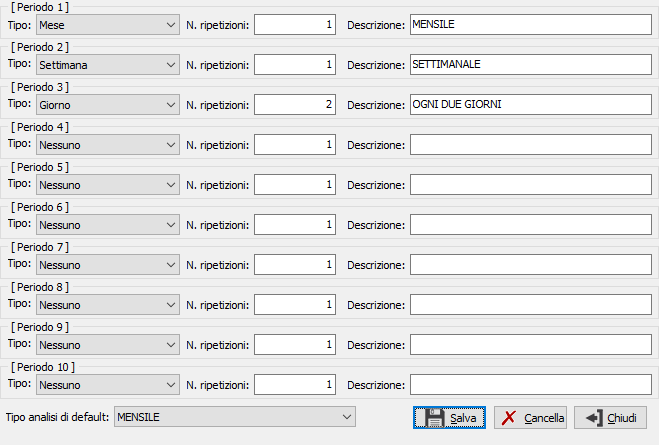

Configurazione periodi
La tabella consente di impostare 10 periodi da utilizzare per l'analisi MPS per orizzonte temporale.

La creazione dei periodi avviene sulla base di un tipo (Mensile, settimanale, ecc) rappresentato nella casella a discesa, del numero di ripetizioni che il tipo analisi deve avere e di una descrizione che sarà visualizzata nella casella relativa alla tipologia di analisi della procedura Analisi MPS; ad esempio se volessimo creare un analisi trimestrale dovremmo indicare il tipo Mensile e come ripetizioni il numero 3. E' inoltre possibile assegnare il tipo analisi di default tra quelle configurate.